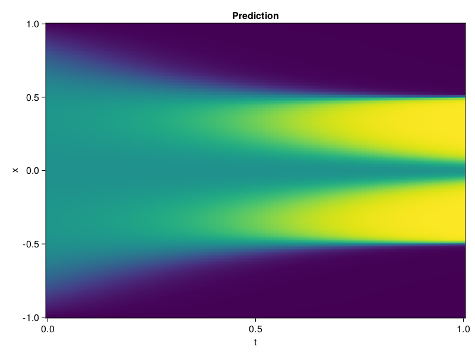

Allen-Cahn Equation with Sequential Training
In this tutorial we are going to solve the Allen-Cahn equation with periodic boundary condition from $t=0$ to $t=1$. The traning process is split into four stages, namely $t\in [0,0.25]$, $t\in [0.0,0.5]$, $t\in [0.0,0.75]$ and $t\in [0.0, 1.0]$.
using ModelingToolkit, IntervalSets
using Sophon
using Optimization, OptimizationOptimJL
@parameters t, x
@variables u(..)
Dₓ = Differential(x)
Dₓ² = Differential(x)^2
Dₜ = Differential(t)
eq = Dₜ(u(x, t)) - 0.0001 * Dₓ²(u(x, t)) + 5 * u(x,t) * (abs2(u(x,t)) - 1.0) ~ 0.0
domain = [x ∈ -1.0..1.0, t ∈ 0.0..0.25]
bcs = [u(x,0) ~ x^2 * cospi(x),
u(-1,t) ~ u(1,t)]
@named allen = PDESystem(eq, bcs, domain, [x, t], [u(x, t)])\[ \begin{align} - 0.0001 \frac{\mathrm{d}}{\mathrm{d}x} \frac{\mathrm{d}}{\mathrm{d}x} u\left( x, t \right) + 5 \left( -1 + \left|u\left( x, t \right)\right|^{2} \right) u\left( x, t \right) + \frac{\mathrm{d}}{\mathrm{d}t} u\left( x, t \right) =& 0 \end{align} \]
Then we define the neural net, the sampler, and the training strategy.
chain = FullyConnected(2, 1, tanh; hidden_dims=16, num_layers=4)
pinn = PINN(chain)
sampler = QuasiRandomSampler(500, (300, 100))
strategy = NonAdaptiveTraining(1, (50, 1))
prob = Sophon.discretize(allen, pinn, sampler, strategy)OptimizationProblem. In-place: true
u0: ComponentVector{Float64}(layer_1 = (weight = [0.018632642924785614 -1.636091709136963; 1.9235689640045166 -1.0123209953308105; … ; -0.941818118095398 0.6334047317504883; 1.3321235179901123 -1.3371877670288086], bias = [0.0; 0.0; … ; 0.0; 0.0;;]), layer_2 = (weight = [-0.6616895794868469 -0.02800389565527439 … -0.549067497253418 -0.3063298761844635; 0.293917715549469 0.034397099167108536 … -0.2760778069496155 -0.15696148574352264; … ; -0.17698781192302704 -0.22513169050216675 … -0.5995530486106873 -0.28852128982543945; -0.3216465711593628 0.3013979196548462 … -0.42472198605537415 -0.26536422967910767], bias = [0.0; 0.0; … ; 0.0; 0.0;;]), layer_3 = (weight = [-0.3320029079914093 0.6763647198677063 … -0.15485318005084991 0.5090116262435913; -0.3504045307636261 0.43109434843063354 … 0.015007402747869492 -0.6710445284843445; … ; -0.08804314583539963 -0.39082446694374084 … 0.5871548056602478 0.06697625666856766; 0.47097745537757874 -0.026663949713110924 … -0.6955457329750061 0.5070277452468872], bias = [0.0; 0.0; … ; 0.0; 0.0;;]), layer_4 = (weight = [-0.7174946069717407 -0.03628876805305481 … -0.015210266225039959 0.4323633313179016; -0.5470319390296936 -0.05248384177684784 … -0.4200677275657654 0.6549606919288635; … ; -0.06932295113801956 -0.4189646244049072 … 0.43152064085006714 -0.6628903150558472; -0.6128888726234436 0.39868003129959106 … -0.6415850520133972 0.6324108839035034], bias = [0.0; 0.0; … ; 0.0; 0.0;;]), layer_5 = (weight = [-0.27662384510040283 0.26955562829971313 … 0.12458604574203491 -0.4471276104450226], bias = [0.0;;]))We solve the equation sequentially in time.
function train(allen, prob, sampler, strategy)
bfgs = BFGS()
res = Optimization.solve(prob, bfgs; maxiters=2000)
for tmax in [0.5, 0.75, 1.0]
allen.domain[2] = t ∈ 0.0..tmax
data = Sophon.sample(allen, sampler)
prob = remake(prob; u0=res.u, p=data)
res = Optimization.solve(prob, bfgs; maxiters=2000)
end
return res
end
res = train(allen, prob, sampler, strategy)u: ComponentVector{Float64}(layer_1 = (weight = [-0.006922525466424188 -1.5651355729873226; 2.525828797596496 -0.6997160303865858; … ; -0.48343112947066247 0.4386221156258167; 1.408703996189289 -1.1172228166289992], bias = [0.06454075091317676; -0.3032173234949922; … ; 0.5917201702468394; 1.3649815624031616;;]), layer_2 = (weight = [-0.7049252992675079 -0.1907300790509275 … -0.444566310151384 -0.786896625330324; 0.19762528935663445 0.5092863071457305 … -0.4361445337263216 -0.09640904936388409; … ; -0.20288434907698294 -0.8096454844304434 … -0.4844799828043869 -0.8183415780475422; -0.2509544741993552 0.1804518009736782 … -0.5209109553327176 -0.5168466009296661], bias = [-0.2785674577475606; -0.10041554671326637; … ; -0.3104801044458914; -0.19286450857635523;;]), layer_3 = (weight = [-0.8807445449987992 0.3922517247654419 … -0.7045384841044228 1.0151147320571634; -0.057420244070214295 0.4498801779134855 … -0.24225931655704436 -1.0865217922748105; … ; 0.1256730435094501 0.10848533690544963 … 1.2507206433980758 0.5252069853769111; 0.4970180326355469 0.13402823642113734 … -0.7077303449385123 0.6866207573816994], bias = [-0.12297129422406036; 0.36368520315509956; … ; -0.3893945390386989; 0.18103808678165798;;]), layer_4 = (weight = [-0.22854157692989616 0.32778462863589636 … 0.3929324351745051 0.3813792153039325; -0.7293650384953503 0.09294733688163494 … -0.16697490338393958 -0.21428968214361335; … ; -0.003695962161370333 -0.7818466962299553 … 0.010165373262330803 -0.5308077918511832; -0.8024829465047101 0.8329711607783378 … -0.996544645946859 0.4874576061140065], bias = [0.25208682623651735; 0.6062086627237129; … ; -0.2690599837759626; -0.2587354295626737;;]), layer_5 = (weight = [-0.5128309212254888 0.2927443803459733 … 0.43961392738324284 -0.0768866009374251], bias = [-0.4827970534247796;;]))Let's plot the result.
using CairoMakie
phi = pinn.phi
xs, ts = [infimum(d.domain):0.01:supremum(d.domain) for d in allen.domain]
axis = (xlabel="t", ylabel="x", title="Prediction")
u_pred = [sum(pinn.phi([x, t], res.u)) for x in xs, t in ts]
fig, ax, hm = heatmap(ts, xs, u_pred', axis=axis)